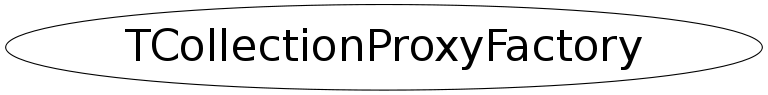

Function Members (Methods)
public:
| TCollectionProxyFactory() | |
| TCollectionProxyFactory(const TCollectionProxyFactory&) | |
| ~TCollectionProxyFactory() | |
| static TClassStreamer* | GenEmulatedClassStreamer(const char* class_name, Bool_t silent) |
| static TMemberStreamer* | GenEmulatedMemberStreamer(const char* class_name, Bool_t silent) |
| static TVirtualCollectionProxy* | GenEmulatedProxy(const char* class_name, Bool_t silent) |
| static TClassStreamer* | GenExplicitClassStreamer(const ROOT::TCollectionProxyInfo& info, TClass* cl) |
| static TMemberStreamer* | GenExplicitMemberStreamer(const ROOT::TCollectionProxyInfo& info, TClass* cl) |
| static TCollectionProxyFactory::Proxy_t* | GenExplicitProxy(const ROOT::TCollectionProxyInfo& info, TClass* cl) |
| static TGenCollectionStreamer* | GenExplicitStreamer(const ROOT::TCollectionProxyInfo& info, TClass* cl) |
| TCollectionProxyFactory& | operator=(const TCollectionProxyFactory&) |
Class Charts
{kind=link}
{kind=link}
{kind=link}
{kind=link}

Function documentation
TVirtualCollectionProxy* GenEmulatedProxy(const char* class_name, Bool_t silent)
Generate emulated collection proxy for a given class
TClassStreamer* GenEmulatedClassStreamer(const char* class_name, Bool_t silent)
Generate emulated class streamer for a given collection class
TMemberStreamer* GenEmulatedMemberStreamer(const char* class_name, Bool_t silent)
Generate emulated member streamer for a given collection class
Proxy_t* GenExplicitProxy(const ROOT::TCollectionProxyInfo& info, TClass* cl)
Generate proxy from static functions
GenExplicitStreamer(const ROOT::TCollectionProxyInfo& info, TClass* cl)
Generate streamer from static functions
GenExplicitClassStreamer(const ROOT::TCollectionProxyInfo& info, TClass* cl)
Generate class streamer from static functions
GenExplicitMemberStreamer(const ROOT::TCollectionProxyInfo& info, TClass* cl)
Generate member streamer from static functions